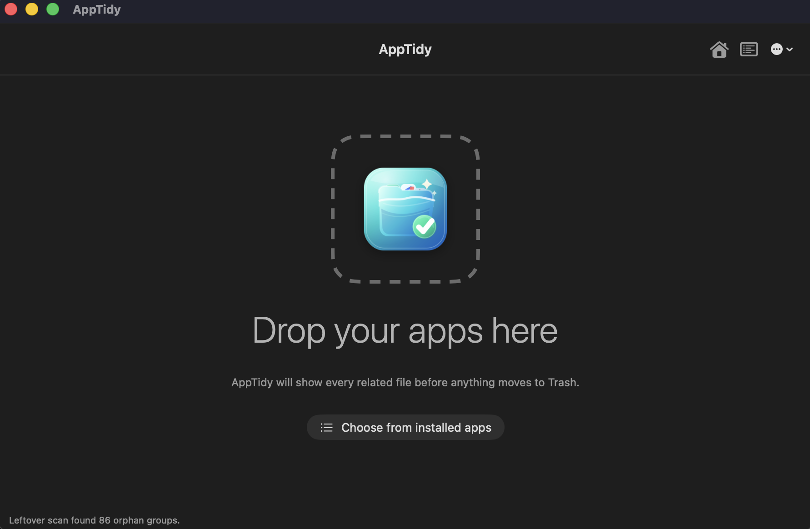

1
How it works
Follow the Mac cleanup flow from app selection to review, Trash-only removal, and local history.
Uninstall Mac apps with review-first cleanup for preferences, caches, containers, logs, receipts, and support files before anything moves to Trash.
Free for macOS 13+. Signed and notarized v0.1.3.
Start with the workflow, compare the cleanup surfaces, or read the privacy details without digging through one long page.
Follow the Mac cleanup flow from app selection to review, Trash-only removal, and local history.
See the review queue, leftovers tools, inventory, Homebrew awareness, and cleanup history.
AppTidy is free to use. Support helps keep the app independent, polished, and actively maintained.
Short explainers for the searches people use when they need a careful app uninstaller, leftover cleaner, or Homebrew cask cleanup path.

AppTidy uses native macOS appearance, so the same workflow feels at home in Light Mode and Dark Mode. Advanced users can verify the download checksum.
Answers to the common cleanup questions AppTidy is designed around.
Choose or drop the app in AppTidy, review the related preferences, caches, containers, logs, receipts, and support files, then move selected items to Trash.
Yes. AppTidy is free to download and use, with no ads in the current release.
No. AppTidy moves selected items to Trash in the current release, so you can restore them from Finder if needed.
Yes. When Homebrew integration is enabled, AppTidy can detect installed casks and offer the matching brew uninstall --cask --zap command for Terminal review.
Mac apps often store preferences, caches, containers, logs, receipts, and support data outside the app bundle, so those files can remain after dragging an app to Trash.